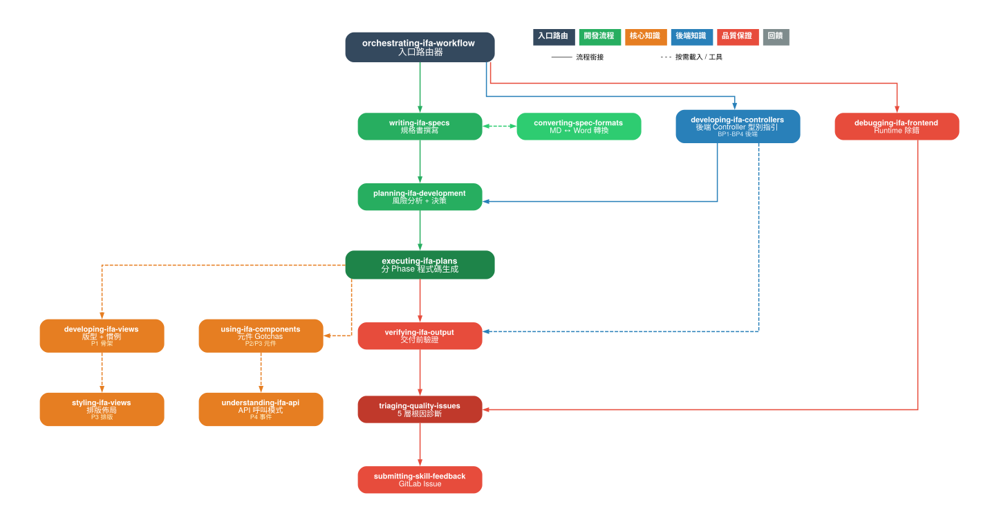

個人目標
skills4ifa 前端開發指南
16 個 Skill 模組 / v0.7.0 / 四層驗證框架
AI/BI 視覺化元件庫
三庫比較 / 3,411 LOC / 可重用元件庫
C# 進階學習
async/await + LINQ / IFA 應用對照
Obsidian PKM
9 分類 / 8 模板 / 11 則結構化筆記
iPAS AI 初級證照
順延至 Q2，目標 5/16 應考
例行工作
協助其他部門技術
採購網系統導入 / 教育訓練
動態表單規劃
本季無交辦工單，已由同仁完成
skills4ifa 前端開發指南
自我評述
本季原定目標為產出一份涵蓋 React 元件開發規範、公司既有前端模組使用慣例、API 呼叫模式及頁面路由與狀態管理準則的 Skills.md 文件。實際執行成果遠超預期，已建構出一套完整的 AI Agent Skills 框架體系（skills4ifa），目前版本 v0.7.0。
透過 Skill 模組化設計，開發者可直接以自然語言指令驅動 AI 進行 IFA 開發，從需求理解到程式碼生成再到驗證產出形成閉環，預估可加速開發效率 30% 以上（超越原定 20% 目標）。
關鍵數據
具體成果
Skill 模組體系
涵蓋前端 Views 開發、元件使用、API 整合、樣式規範、規格書撰寫、計畫擬定、品質檢測、驗證輸出等完整開發生命週期。
驗證框架
四層驗證架構——L1 斷言驗證（Assertion）、L2 信任分數（Trust Score v5）、L3 技術檢查（Tech Checker）、L4 合併報告（Verification Report），確保 AI 生成程式碼的品質可量化追蹤。
教育訓練
投影片 26 張、講者稿、Q&A 卡片、設置指南、觀察指南等完整訓練材料，並完成 PDF 及 PPTX 版本。規格書撰寫指南 33KB / 770 行，完整訓練計畫 57KB / 872 行。
後端延伸
已啟動後端 Controller Skill（developing-ifa-controllers），為 Q2 後端 Skills.md 提前佈局。
Skills 全景圖

skills4ifa 全景圖 — 16 個 Skill 模組的分層架構與工作流向
AI/BI 視覺化應用研究與元件庫建立
自我評述
原定目標為評估 Chart.js 與 D3.js 兩大視覺化框架，完成 POC 展示。實際執行擴展為三庫比較（加入 Recharts），並完成兩階段開發：Phase A 框架評估 + Phase B 可重用元件庫。
測試資料模擬 IFA IFAC010Q 預算執行報表的實際欄位結構，驗證元件庫可直接接入 IFA 資料格式，為後續 BI 視覺化導入奠定基礎。
關鍵數據
框架評估結果
| 評估維度 | 權重 | Chart.js | D3.js | Recharts |
|---|---|---|---|---|
| 開發效率 | 25% | 4 | 2 | 5 |
| IFA 適配性 | 25% | 4 | 3 | 4 |
| 可維護性 | 20% | 4 | 2 | 5 |
| API 設計 | 15% | 3 | 3 | 5 |
| 客製化能力 | 10% | 4 | 5 | 3 |
| 響應式 | 5% | 4 | 2 | 5 |
| 加權總分 | 100% | 3.85 | 2.70 | 4.55 |
最終選定 Recharts 作為 Phase B 正式框架
具體成果
Phase A — 三庫比較
以完全相同的 IFA 預算執行模擬資料（~150 筆，含 8 種邊界條件），分別以 Chart.js、D3.js、Recharts 實作折線圖、柱狀圖、圓餅圖、儀表板四種圖表，共 12 個圖表元件 + 3 個展示頁 + 1 個並排比較頁。
Phase B — 可重用元件庫
以 Recharts 封裝 4 個通用圖表元件（LineChart、BarChart、PieChart、Dashboard），設計 useChartData hook 作為資料轉換層，相容 IFA masterData / opData 格式，支援 controlled / uncontrolled 雙模式。
文件產出
框架評估報告（六維度加權評分）+ Phase B 元件 API Reference 文件。
POC Demo
C# 進階學習
自我評述
已完成非同步設計模式與 LINQ 兩大主題的系統化學習，並產出完整學習成果文件。每個概念均對照 IFA 後端 KSI Kernel 框架的實際應用場景，確保學習成果可直接應用於 Q2 後端 Skills.md 撰寫。
學習主題
非同步設計模式
- async/await 基礎原理與命名慣例
- Task / Task<T> 三種狀態管理
- TAP（Task-based Asynchronous Pattern）
- 常見陷阱：避免 .Result/.Wait() 死鎖
- async void 使用限制
LINQ
- 方法語法 vs 查詢語法
- 篩選投影：Where、Select、SelectMany
- 聚合：Count、Sum、Average、Max/Min
- 分組連接：GroupBy、Join
- 延遲執行與 IEnumerable vs IQueryable
IFA 實際應用對照
DataTable + LINQ 查詢
使用 AsEnumerable() 將 DataTable 轉換後，以 LINQ 進行篩選與欄位提取。
Searched 事件資料後處理
在 SearchedEventArgs 事件中使用 LINQ 進行資料後加工與轉換。
多 DataTable 集合操作
Union 合併多個 DataTable、字串陣列的 WHERE 條件組合與必填欄位檢查。
Controller 非同步升級概念
理解 Controller Action 從同步升級為非同步的模式，以及 Transaction 的非同步處理。
Obsidian 個人知識管理系統
自我評述
已完成 Vault 結構設計與模板建立，並累積符合模板規範的筆記超過 10 則。PKM 系統已與日常工作流程整合，各季 KPI 產出均納入 Vault 管理。
關鍵數據
Vault 架構
模板系統
PKM 指南體系
建立 8 篇系統性指南：「為什麼寫筆記」、「筆記類型速查」、「每日工作流」、「筆記寫作指引」、「回顧與連結」、「AI 可讀性規範」、「團隊入門指南」、「Vault 結構地圖」，為團隊推廣 PKM 奠定基礎。
iPAS AI 應用規劃師 初級證照
自我評述
本季因 skills4ifa 開發工作量遠超預期（從原定 1 份 Skills.md 擴展為 16 個 Skill 模組 + 驗證框架 + 教育訓練材料），且視覺化 POC 亦擴展為三庫比較，導致 iPAS 學習時間被壓縮。
經評估後決定將 iPAS 初級與 Q2 原定之中階合併規劃，待確認下一梯次考試時間後統一安排讀書計畫。
考試梯次
Q2 讀書計畫 — iPAS 初級（目標 5/16 應考）
中級考試為 11/14，落在 Q4，故 Q2 聚焦初級備考。
讀書計畫
4/1 — 4/11：基礎概念
AI 基礎理論、機器學習概論、深度學習基礎。取得官方教材與歷屆題庫，完成第 1 回模擬試題。
4/14 — 4/25：應用領域
AI 應用場景（NLP、CV、推薦系統）、資料前處理與特徵工程、模型評估指標。完成第 2 回模擬試題。
4/28 — 5/9：進階主題與弱項補強
AI 倫理與法規、產業應用案例、模型部署概念。完成第 3 回模擬試題，針對弱項集中補強。
5/12 — 5/16：最終衝刺
全範圍模擬測驗、錯題回顧、考前重點整理。5/16（六）應考。
例行工作
協助其他部門技術（規劃/開發）
本季協助 V7 部門開發「採購網系統」，將開發流程導入 skills4ifa 框架，透過 Skill 模組化的方式協助該部門加速開發節奏。此外，透過 skills4ifa 的內部教育訓練，協助同仁認識 Agent Skills 的概念與操作方式，並即時排除同仁在使用上遭遇的問題。
協助研發開發產品化：動態表單規劃
本季動態表單規劃相關工作已由同仁完成，未產生交辦工單，故無對應執行成果。